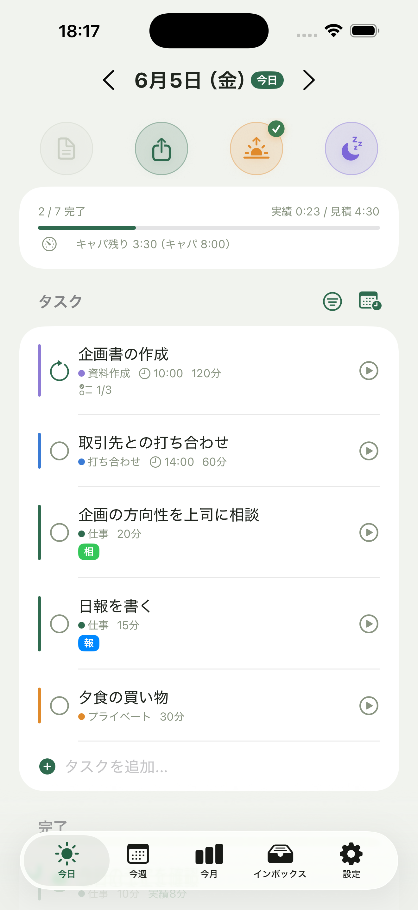
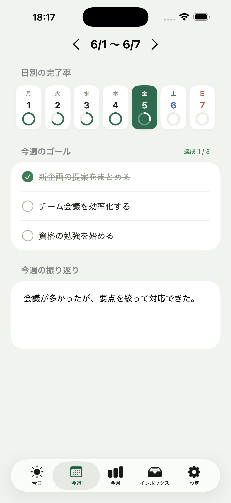
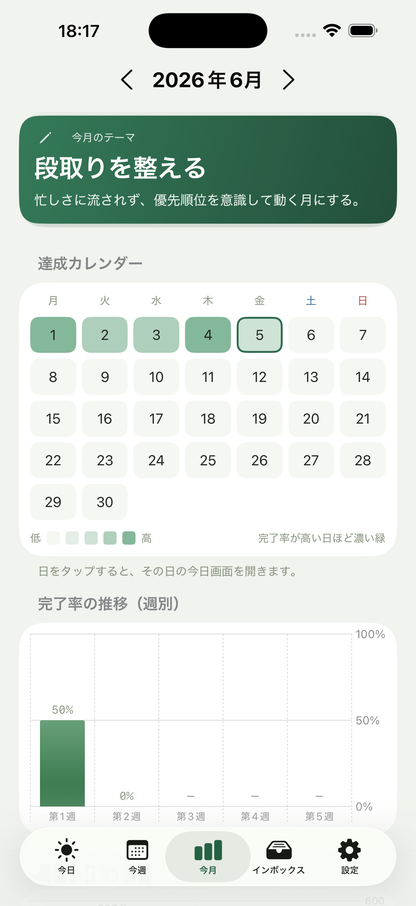
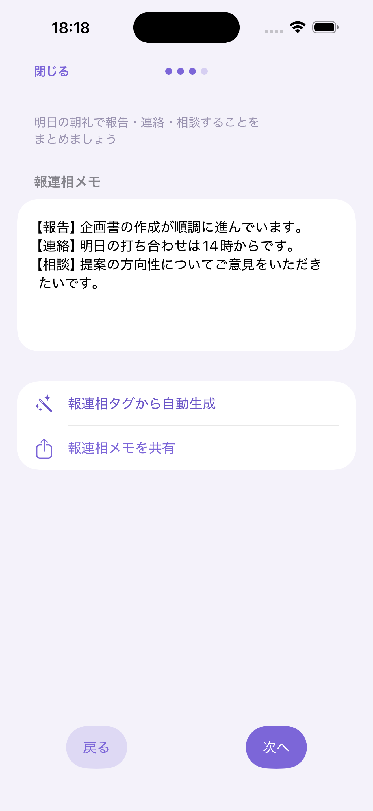

朝に予定を立て、作業時間を記録し、終業時には報連相まで整理。Hinotoは、日々のタスク・実績・振り返りをひとつにつなげるiPhone/iPadアプリです。
iOS / iPadOS対応 ・ 基本機能は無料 ・ iCloud同期対応

朝はタスクを並べたはずなのに、割り込みや見積もり違いで予定が崩れる。終業時には「今日、何をどこまでやったか」を思い出しながら日報を書く。相談すべきことも、あとで共有しようと思ったまま抜けてしまう。Hinotoは、そんな毎日の小さな負担を、タスク管理の中で自然に減らします。
Hinotoでは、朝に今日のタスクと見積もり時間を決めます。日中はフォーカスタイマーで実績を残し、必要な共有事項には報・連・相タグを付けます。そして終業時には、完了タスク、未完了タスク、報連相、所感をまとめて振り返れます。
朝
タスクに見積時間を入れて、1日の作業量を現実的に把握。今日やることが多すぎないかを、朝のうちに確かめられます。
日中
タイマーで作業時間を記録。完了率と実績が自然に積み上がり、あとから「何をどこまでやったか」を思い出す必要がありません。
夜
完了・未完了・共有事項を確認し、日報としてまとめる。終業時の報告を、ゼロから書き起こさずに済みます。
毎日触るのは今日の画面だけ。そこに積み上がった記録が、週の振り返りや月のテーマへ自然につながります。
やることを並べ、見積もり時間を添えるだけ。完了率と実績/見積が常に上部に出るので、1日の進み具合が直感的にわかります。
朝、今日できる量を見積もる
あれもこれもではなく、今週やり切る3つを固定。曜日ストリップの達成リングで1週間の流れを俯瞰し、週末に振り返りを書き残せます。

今週やり切ることを3つに絞る
今月どうありたいかをテーマにして掲げる。日々の完了率はヒートマップで色づき、「やり切った日」が一目でわかります。タップでその日の今日画面へ。

見積と実績の傾向を振り返る
仕事モードをオフにするための短い儀式。完了タスクの読み込み → 振り返り → 日報共有までをステップで案内。だらだら続けず、気持ちよく終わらせます。
完了・未完了・所感を、日報にまとめる
作業中のタスクはホーム画面ウィジェットとライブアクティビティに表示。アプリを開かなくても、経過時間がひと目でわかります。
仕事・経理・プライベートなど、チャンネルごとにタスクを色分け。複数の案件が混ざっても、種類を見分けやすくなります。
見積もり時間を、そのまま1日の予定に割り付け。今日の作業量が現実的かを、時間の帯で確認できます。
完了したこと、残ったこと、共有すべきこと。その日の仕事に必要な情報を、しめくくりで確認できます。Slackやメールに貼る前の整理にも使いやすく、日報作成の負担を軽くします。

報連相メモを、タグからまとめる
タスクごとに、見積もった時間と実際にかかった時間を並べて記録。「思ったより時間がかかる作業」が見えてくると、翌日の見積もりが少しずつ現実的になります。
実装、レビュー、調査、問い合わせ対応。細かく分かれる作業を、見積もりと実績つきで整理できます。
日報や作業報告が必要な毎日に。完了タスクと共有事項を、終業時にまとめやすくなります。
自分で作業量を管理する日々に。今日やること、進捗、相談事項を手元で整理できます。
複数案件の作業ログを残したいときに。チャンネル分類で、仕事の種類を分けて管理できます。
タスクを完了するだけなら、一般的なToDoアプリで十分かもしれません。けれど、見積もり、実績、報連相、日報まで必要なら、仕事の流れに沿った管理が必要です。
| 比較項目 | 一般的なToDoアプリ | 時間記録アプリ | Hinoto |
|---|---|---|---|
| 今日のタスク管理 | ○ | △ | ○ |
| 見積時間 | △ | △ | ○ |
| 実績時間 | △ | ○ | ○ |
| フォーカスタイマー | △ | ○ | ○ |
| 報連相の整理 | × | × | ○ |
| 日報・振り返り | △ | × | ○ |
| 週次/月次の分析 | △ | △ | ○ |
| iOSネイティブ体験 | アプリ次第 | アプリ次第 | ○ |
Hinotoは、ToDo・時間記録・日報作成を別々に管理するのではなく、1日の仕事の流れとして扱います。
毎日のタスク管理と作業記録は、まず無料で。週次・月次の振り返りまで深めたくなったら、Proへ。
無料機能はずっと無料。Pro はいつでも購入でき、どのプランでも使えるPro機能は同じです。
Hinotoは、毎日使う業務アプリとして、シンプルさと安心感を大切にしています。データは端末内保存に対応し、iCloud同期にも対応。機種変更後も、いつもの作業ログを引き継げます。
プライバシーポリシー ・ 利用規約 ・ お問い合わせ も明示しています。
今日のタスク管理、見積もり、実績記録など、基本的な日次管理は無料で始められます。週次・月次の振り返りや詳細な分析、報連相サマリーのコピーを使いたい場合はProを検討できます。
Hinotoは、タスクを完了するだけでなく、見積時間、実績時間、報連相、日報、振り返りまでを1日の流れで扱える点が違います。予定・実績・日報が別々のツールに分断されません。
完了タスク、未完了タスク、報連相、所感をもとに、共有しやすい形へ整理できます。最終的な内容は自分で確認・編集できます。
毎日使う中心は「今日」の画面です。まずはタスクと見積もりを入れ、作業時にタイマーを使うだけでも効果を感じやすい設計です。複雑な設定は必要ありません。
iOS / iPadOSに対応しています。iPhoneでもiPadでも、同じように今日の段取りから日報まで整えられます。
データは端末内保存に対応し、iCloud同期にも対応しています。詳しい取り扱いはプライバシーポリシーで確認できます。
まずは今日のタスクを並べるところから。見積もり、実績、報連相、振り返りが自然につながれば、終業時の負担は少し軽くなります。
App Store で無料ではじめる基本機能は無料。必要になったらProへ。